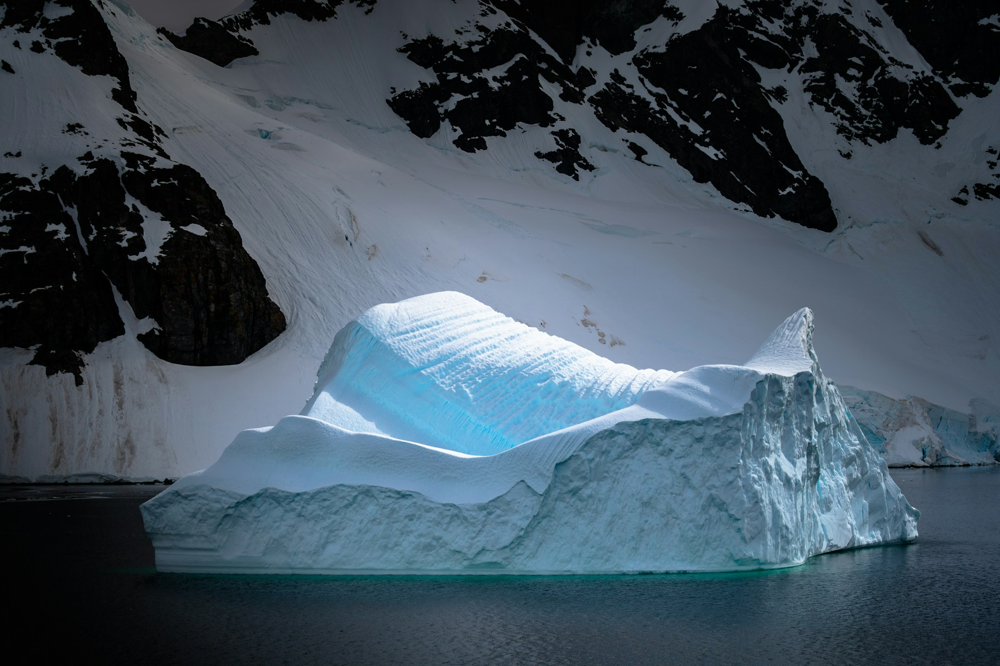
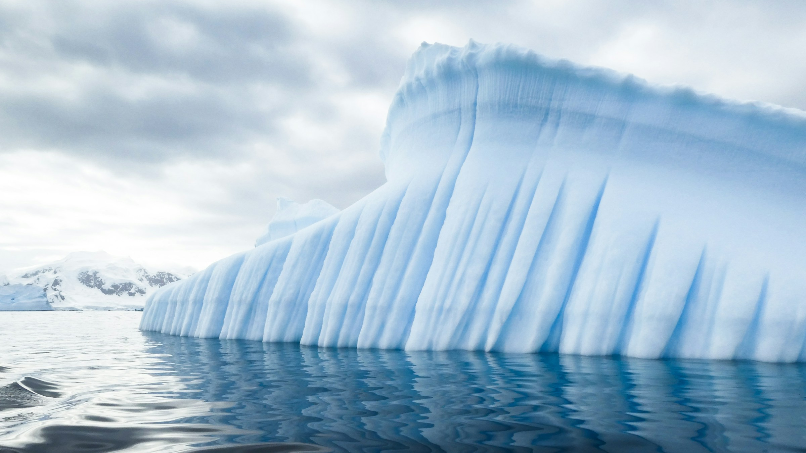

EIS & OZEAN
Eine Landschaft in Bewegung.
Eisberge lösen sich von Gletschern oder Schelfeis und treiben mit Wind und Meeresströmungen weiter.

Eine Reise zum südlichsten Kontinent
Wo Eis zu Landschaft wird und Stille eine neue
Dimension bekommt. Willkommen in der Antarktis.
EIN ORT WIE KEIN ANDERER
Am südlichen Ende unserer Erde liegt ein Kontinent der Extreme. Gewaltige Gletscher, tiefblaues Meer und Tiere, die in dieser besonderen Welt zu Hause sind.
Entdecke eine Landschaft, die uns zeigt, wie faszinierend unser Planet ist.
LANDSCHAFTEN
Zwischen schroffen Gipfeln und schwimmenden
Eisriesen schreibt die Natur ihre eigenen Geschichten.

Eisberge lösen sich von Gletschern oder Schelfeis und treiben mit Wind und Meeresströmungen weiter.
FELS & EWIGES EIS
Antarktika ist festes Land unter einem gewaltigen Eisschild. An manchen Stellen ragen Bergspitzen aus dem Eis. Diese Felsinseln werden Nunataks genannt.
Den Kontinent verstehen LAND · EIS · MEERTIERWELT
Erstaunlich angepasst.
Untrennbar mit dem Meer verbunden.
 AN LAND & IM WASSER
AN LAND & IM WASSER
An Land unverwechselbar, im Meer in ihrem Element: Ihre Flügel sind zu Flossen geworden. Das kalte Südpolarmeer liefert ihnen Nahrung.
 ZWISCHEN EIS & MEER
ZWISCHEN EIS & MEER
Das Meer ist ihr Jagdrevier, das Eis ein Ruheplatz. Eine dicke Fettschicht hilft den Meeressäugern, ihre Körperwärme zu bewahren.
 KLEIN & UNVERZICHTBAR
KLEIN & UNVERZICHTBAR
Diese kleinen Krebstiere verbinden die Welt der Algen mit größeren Meerestieren. Für viele Pinguine, Fische und Wale sind sie eine wichtige Nahrung.
WISSEN & STAUNEN
Kleine Antworten auf große Fragen
rund um den weißen Kontinent.
Die Arktis liegt rund um den Nordpol und besteht im Zentrum aus einem von Land umgebenen Ozean. Am Südpol ist es umgekehrt: Der Kontinent Antarktika ist vom Südlichen Ozean umgeben. Die Antarktis umfasst auch die umliegende südpolare Region.
Dichtes Eis absorbiert rotes Licht stärker als blaues. Wenn Licht einen längeren Weg durch das Eis zurücklegt, wird der blaue Farbton besonders sichtbar. Viele kleine Luftblasen lassen Schnee und Eis dagegen weiß erscheinen.
Es gibt keine dauerhaft ansässige Bevölkerung. Menschen leben und arbeiten zeitweise auf Forschungsstationen – im Sommer deutlich mehr als im Winter. Sie untersuchen unter anderem Eis, Klima und Ökosysteme.
Antarktisches Eis speichert einen großen Teil des Süßwassers der Erde. Eisbohrkerne bewahren Hinweise auf das Klima vergangener Zeiten. Und der Südliche Ozean spielt eine wichtige Rolle im weltweiten Austausch von Wärme und Wasser.
90 Grad südlicher Breite bezeichnet den geografischen Südpol. Breitengrade beschreiben, wie weit nördlich oder südlich des Äquators ein Ort liegt: Am Äquator sind es 0°, an den Polen 90°. Das S steht für Süden, das N für Norden.
Die Angabe beschreibt einen Ort, keine Temperatur. Der Kompass zeigt die Himmelsrichtungen. Eine echte Kompassnadel richtet sich jedoch nach dem Magnetfeld der Erde; der geografische und der magnetische Südpol sind unterschiedliche Orte.
| Ort | Breite | Was den Ort prägt |
|---|---|---|
| Südpol Antarktika | 90° S | Der südlichste Punkt der Erde liegt auf dem mächtigen Eisschild eines Kontinents. |
| Nordpol Arktischer Ozean | 90° N | Am nördlichsten Punkt liegt unter dem Meereis ein Ozean, kein Festland. |
| Wostok Antarktika | 78° S | Hoch gelegene Forschungsstation im Inneren des Eisschilds. Hier wurden 1983 −89,2 °C Lufttemperatur gemessen. |
| Eureka Kanada | 80° N | Eine Wetterstation auf Ellesmere Island in der kanadischen Hocharktis. |
| Ny-Ålesund Spitzbergen, Norwegen | 79° N | Ein Forschungsort am Kongsfjord: eine arktische Küstenlandschaft statt eines hohen Eisschilds. |
Die geografische Breite allein bestimmt nicht, wie kalt ein Ort ist. Auch Höhenlage, Meeresnähe und Jahreszeit spielen eine Rolle.
WEIT WEG. UND DOCH EIN TEIL VON UNS.
Wer die Antarktis kennenlernt, sieht die Erde mit anderen Augen.
Bleib neugierig.